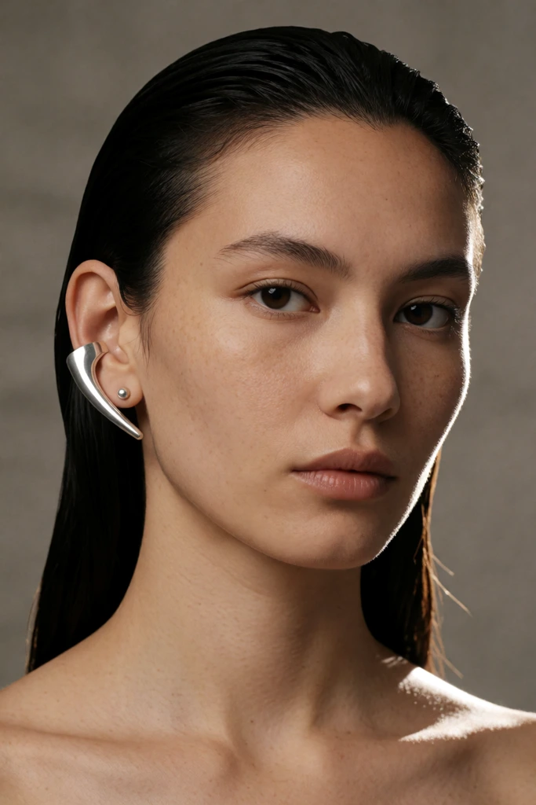
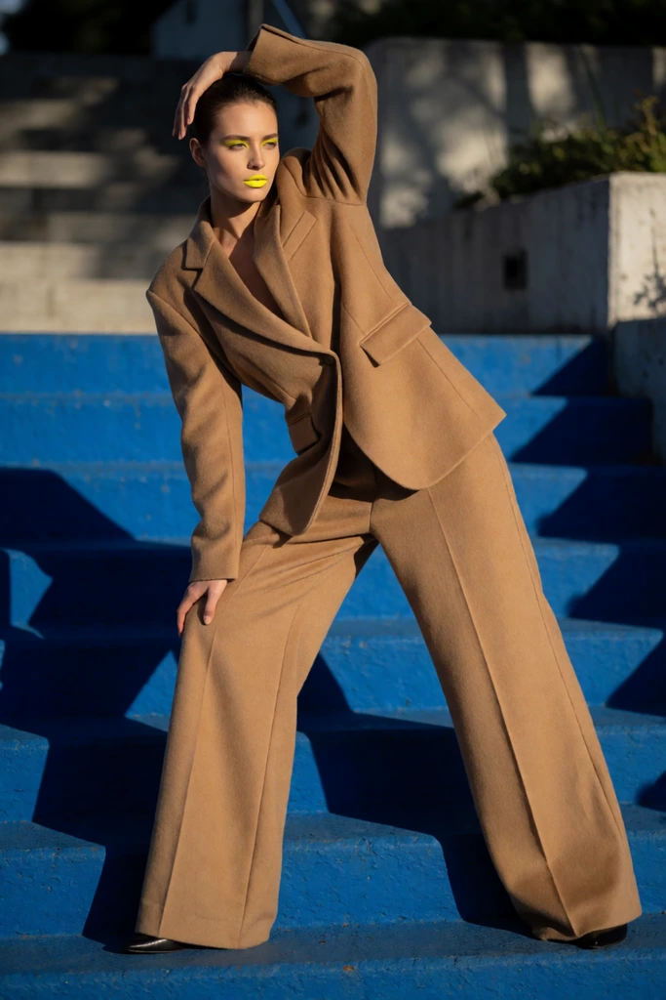

Lead with the garment
Describe silhouette, construction, fabric behavior, and the exact color before the location.
Fashion prompt guide
Tested Krea 2 Turbo fashion prompts for campaigns, fabrics, runway compositions, editorial portraits, and controlled color palettes.
Start with the part that defines the image, then move from the large composition to visible surface detail. The order below is short enough to edit without losing track of the variable you changed.
Describe silhouette, construction, fabric behavior, and the exact color before the location.
A clear stance or walk is easier to preserve than several simultaneous gestures.
Set the crop, viewpoint, background, contrast, and campaign or magazine treatment.
These are catalog entries with the exact prompt and generated output kept together. Copy a prompt, then change one clause at a time.




Download the wildcard pack, or use the starter graph to render a prompt in ComfyUI.